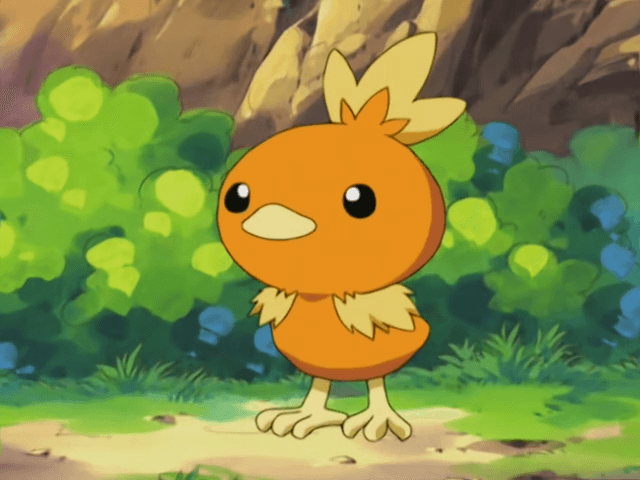

Post #1
Torchic is a small, chick Pokémon with stubby, downy, yellow wings. Its body is covered with orange feathers. There is an orange and yellow crest on its head that resembles a flame. Its two thin legs and short beak are a light brownish yellow, and the feet have three toes in front and one in the back. A male Torchic will have a small black speck on its rear that is not present in females.
Post #2
Somewhere in its belly, this Pokémon has a place where it keeps a flame. This internal flame causes Torchic to feel warm if hugged. When attacked, it will shoot fireballs of 1,800 °F (1,000 °C) at its foes, leaving them scorched black. It dislikes darkness, as it cannot see its surroundings. Torchic will follow its Trainer with unsteady steps. While Torchic is rarely found in the wild, it is known to inhabit grasslands.